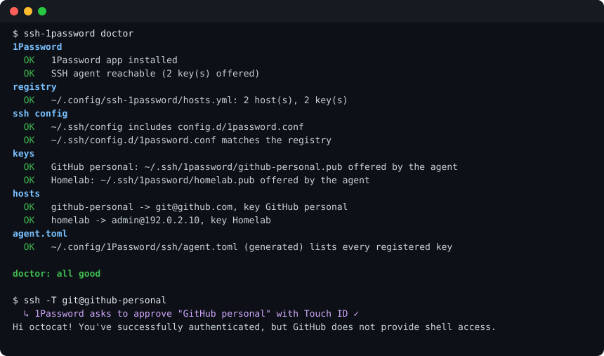

Your SSH keys shouldn't live on your laptop.
Keep private keys in 1Password, approve every use with Touch ID, and give each host only its key. Your whole setup is one small file with no secrets, so a new machine is ready in minutes.
curl -fLO https://github.com/farming-apps/ssh-1password/releases/latest/download/install.sh sh install.sh
One Python 3.8+ script, standard library only. macOS and Linux. No op CLI. MIT.

The file in ~/.ssh is the problem
A private key file works for anything that can read it, without asking you.
Any process can copy it
A malicious package, a compromised extension or anyone with root takes the file and uses it from anywhere, silently.
It leaks into backups
Disk images, sync folders and old laptops keep copies you forgot about. Revoking means finding every server that trusts it.
One key opens everything
The usual id_ed25519 is accepted by GitHub, work servers and your homelab alike. One leak, every door.
How it works
The 1Password SSH agent holds the keys. ssh-1password adds the missing piece: a registry that maps each host alias to one key, and generates the ssh and git config from it.
Only the right key per host
Each host gets IdentitiesOnly yes and its own .pub, so servers never see your other keys and you never hit "Too many authentication failures".
One key per trust domain
Group hosts: one key for forges, one for the homelab, one per client. Fewer keys to rotate, and a compromised domain does not open the others.
Git identity per alias
Add email: and every repo cloned through that alias commits with that identity. Add sign: and the same key signs commits ("Verified" on GitHub and GitLab).
doctor tells you what drifted
Agent reachable, keys offered, config precedence checked with ssh -G, git identity tested in a throwaway repo.
Your whole setup is one file
Aliases, hostnames, users and key titles. No secrets in it.
# ~/.config/ssh-1password/hosts.yml github-work: hostname: github.com user: git key: GitHub work # title of the key item in 1Password email: me@work.example # optional: git identity for these repos homelab: hostname: 192.0.2.10 user: admin key: Homelab
ssh-1password sync # fetches the .pub files, writes the ssh and git config
ssh-1password doctor
git clone git@github-work:org/repo.git
A new machine in five minutes
With file keys, a new laptop means copying ~/.ssh around or re-uploading keys
everywhere. Here the keys are already in your vault; you only bring the registry.
- Install 1Password and enable Settings → Developer → Use the SSH agent.
- Install the tool with the two commands above.
- Bring
hosts.ymlfrom your private dotfiles or a 1Password Secure Note (or setSSH_1P_HOSTSto its path). - Run
ssh-1password sync. Same aliases, same keys, same git identities, on macOS or Linux.
Leaving a machine? There is no private key to wipe: what sync wrote is public by nature.
Sign out of 1Password and that machine can no longer use your keys.
Full guide.
File keys vs ssh-1password
Key files in ~/.ssh | ssh-1password | |
|---|---|---|
| Private key on disk | Yes, readable by your user and root | No, only .pub and config |
| Each use | Silent | Touch ID or system unlock, logged in the item's Activity |
| Keys offered to a host | Often all of them | Only the one registered for it |
| New machine | Copy secrets or regenerate and re-upload | Install, copy hosts.yml, sync |
| Git identity and signing | Per-repo git config by hand | Per alias, generated |
| Agent forwarding | Up to you | ForwardAgent no by default; use ProxyJump |
Where it does not fit
Unattended jobs
cron, systemd timers and CI runners have nobody to approve a prompt. Give them a dedicated file key restricted in authorized_keys.
Hosts that impose a key
A client bastion that hands you a key file? Write its Host block above the Include in your own config; yours always wins.
Your vault must be unlocked
That is the point. If a prompt appears that you did not expect, deny it: something on the machine is trying to use your keys.
FAQ
Do I need the op CLI or a 1Password service account?
No. It talks to the 1Password SSH agent through ssh-add -L to read public keys. The app with the SSH agent enabled is enough.
Will it overwrite my ~/.ssh/config?
No. It appends one Include at the end, once, with a backup. Everything it generates lives in ~/.ssh/config.d/1password.conf, and your own Host blocks above it take precedence. sync --dry-run shows every change first.
Can I keep using an existing key?
Yes. Import it into 1Password and register its title. For new setups, prefer fresh ed25519 keys, one per trust domain.
Does it work on Linux?
Yes, with the 1Password desktop app for Linux and its SSH agent. Approval uses your system authentication.
How do I uninstall it?
sh install.sh --uninstall removes the tool. The generated files are plain ssh and git config.
Take the keys off your disk.
Five minutes to set up, then every machine you own gets the same keys without copying a secret.